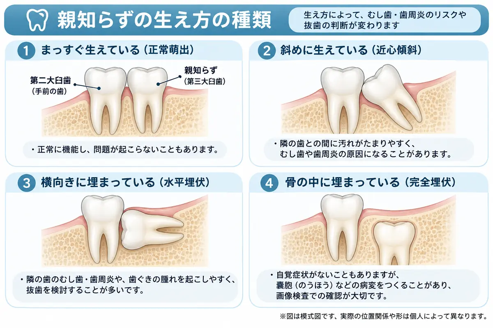

DENTAL MEDICAL BLOG
歯科・口腔外科を、
できるだけわかりやすく。
抜歯・口腔外科・全身疾患と歯科治療について、 歯科医師が医学文献と臨床経験をもとに、 患者さんや一般の方にも読みやすい言葉で解説します。
歯科医師が執筆 ／ 医学文献を確認 ／ 著者・情報の確認方針を見る
FIND AN ARTICLE
知りたいことから探す
「抜歯前」「抜歯後」「持病・手術前」から、今の疑問に合う記事へ進めます。
BEFORE EXTRACTION
抜歯を考えている方へ
親知らずや、持病・薬がある方の抜歯について。
AFTER EXTRACTION
抜歯後の過ごし方
食事や入浴、抜歯後の痛みで気になること。
MEDICAL CONDITIONS
全身疾患と歯科治療
病気や全身麻酔の手術が関係する歯科受診。
LATEST ARTICLES
新着記事
日常診療でよく聞かれる疑問を中心に解説しています。
ABOUT THIS BLOG
専門的な内容を、
一般の方にも伝わる言葉で。
このブログでは、歯科・口腔外科領域で患者さんから よく聞かれる疑問を中心に、 実際の臨床や医学文献を踏まえて情報を整理しています。
難しい医学用語を並べるのではなく、 「結局どう考えればいいのか」が伝わる記事を目指しています。
プロフィール・ブログ方針を見る →AUTHOR
この記事を書いている人｜尻敷かれ先生
尻敷かれ先生（歯科医師）。研修医の頃から口腔外科に携わり、 抜歯や有病者の歯科治療を経験してきました。 治療のメリットとリスクを丁寧に説明し、 患者さんと一緒に方針を考えることを大切にしています。
WRITING & REVIEW
歯科・口腔外科領域の記事執筆・監修
医療記事の執筆や内容確認について、 実績をこのサイトにまとめていく予定です。
医療情報について： 本サイトは一般的な医学情報の提供を目的としています。 個々の診断や治療方針については、 実際に診察を担当する医師・歯科医師へご相談ください。